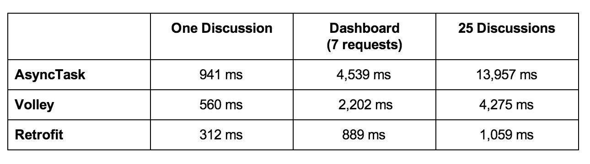

Retrofit --A type-safe HTTP client for Android and Java
- WHY USE RETROFIT？
- 
- 为什么写这个：
- Retrofit不仅效率高，android下一步可能需要使用mvp或mvm开发，然后，Retrofit配合Rxjava或RxAndroid可能跟方便的进行mvp或mvm开发。
Download
- Gradle:
compile 'com.squareup.retrofit:retrofit:2.0.0-beta2'
- github
创建Engine接口实现HTTP API转换
- 以android C端的加油卡为例：
public interface Engine {
// 加油卡列表
@POST("user/fuelcard/list")
Call<RefuleListResponse> loadFuelcardDatas();
// 删除加油卡
// 官方文档没有说明，需要通过@FormUrlEncoded和@Field注解发送请求参数,也可以在@body里传cardId="xx"
@FormUrlEncoded
@POST("user/fuelcard/delete")
Call<BaseResponse> delFuelcard(@Field("cardId") String cardId);
}
- 可以使用Observable配合RxJava进行事件传递
- 需要添加Retrofit适配RxJava的依赖@GET("/user/{id}/photo") Observable<Photo> getUserPhoto(@Path("id") int id);compile 'com.squareup.retrofit:adapter-rxjava:2.0.0-beta2'
- 设置header
* 更多请见官网@Headers("Cache-Control: max-age=640000") @Headers({ "Accept: application/vnd.github.v3.full+json", "User-Agent: Retrofit-Sample-App" })
使用Retrofit生成接口Engine的实现
以android C端的加油卡为例：
- addConverterFactory可以自定义转换器// 如果需要按照不同模块创建不同的engine，需要考虑在什么地方初始化engine； Engine mEngine = new Retrofit.Builder() .baseUrl(HttpMethod.HTTP_URL + "/") .addConverterFactory(GsonConverterFactory.create()) .build().create(Engine.class);- 官网说明：（来源： http://square.github.io/retrofit/）
Converters can be added to support other types. Six sibling modules adapt popular serialization libraries for your convenience.
- Gson: com.squareup.retrofit:converter-gson
- Jackson: com.squareup.retrofit:converter-jackson
- Moshi: com.squareup.retrofit:converter-moshi
- Protobuf: com.squareup.retrofit:converter-protobuf
- Wire: com.squareup.retrofit:converter-wire
Simple XML: com.squareup.retrofit:converter-simplexml
这里用了Gson，需要添加converter-gson依赖
compile 'com.squareup.retrofit:converter-gson:2.0.0-beta2'
- 官网说明：（来源： http://square.github.io/retrofit/）
优化
- 目前为止已经基本可以使用了，但业务需求需要统一增加header，然后又一个深坑来了，官网只有一句话“Headers that need to be added to every request can be specified using an OkHttp interceptor.”
- 经过两天的调试终于写好了顺便加了优雅的日志输出（日志输出参考自：http://stackoverflow.com/questions/28696964/okhttp-how-to-log-request-body）
- 不多说上代码（代码是谁？）
- 首先在Retrofit生成接口Engine的实现增加
- 然后创建okHttp拦截器.client(TWLOkHttpClient.getOkHttpClient(this))//通过okHttp拦截器设置Retrofit的公用头部和日志输出
* 最后来一份删除加油卡的日志（公司网络差用了2169.3ms）：// Retrofit2.0只能通过okHttp拦截器设置Retrofit的公用头部 // Retrofit2.0取去掉了日志功能也需要在okHttp里打印日志 client.networkInterceptors().add(new Interceptor() { @Override public com.squareup.okhttp.Response intercept(Interceptor.Chain chain) throws IOException { Request request = chain.request(); Request.Builder requestBuilder = request.newBuilder(); Request signedRequest = requestBuilder .addHeader("Source", "1") .addHeader("Channel", AppUtil.getChanel(context)) .addHeader("IMEI", AppUtil.getImeiCode(context)) .addHeader("UserId", QicheChaorenApplication.getInstance().getUserId() + "") .addHeader("Version", AppUtil.getAppVersionName(context)) .addHeader("Net", "" + NetWorkUtil.getNetWorkType(context)) .addHeader("Token", TOKEN) .addHeader("SessionId", "" + QicheChaorenApplication.getInstance().getSessionId()) .build(); long t1 = System.nanoTime(); Response response = chain.proceed(signedRequest); long t2 = System.nanoTime(); MediaType contentType = null; String bodyString = null; if (response.body() != null) { contentType = response.body().contentType(); bodyString = response.body().string(); } // 请求响应时间 double time = (t2 - t1) / 1e6d; switch (request.method()) { case "GET": Logger.d("retrofit-->", String.format("GET " + FREQUESTWITHOUTBODY + FRESPONSEWITHBODY, signedRequest.url(), time, signedRequest.headers(), response.code(), response.headers(), stringifyResponseBody(bodyString))); break; case "POST": Logger.d("retrofit-->", String.format("POST " + FREQUESTWITHBODY + FRESPONSEWITHBODY, signedRequest.url(), time, signedRequest.headers(), stringifyRequestBody(signedRequest), response.code(), response.headers(), stringifyResponseBody(bodyString))); break; case "PUT": Logger.d("retrofit-->", String.format("PUT " + FREQUESTWITHBODY + FRESPONSEWITHBODY, signedRequest.url(), time, signedRequest.headers(), signedRequest.body().toString(), response.code(), response.headers(), stringifyResponseBody(bodyString))); break; case "DELETE": Logger.d("retrofit-->", String.format("DELETE " + FREQUESTWITHOUTBODY + FRESPONSEWITHOUTBODY, signedRequest.url(), time, signedRequest.headers(), response.code(), response.headers())); break; } if (response.body() != null) { // 深坑！ // 打印body后原ResponseBody会被清空，需要重新设置body ResponseBody body = ResponseBody.create(contentType, bodyString); return response.newBuilder().body(body).build(); } else { return response; } } });
- 首先在Retrofit生成接口Engine的实现增加
D/retrofit-->: ╔══════════════════════════════════════════════════════════════════════════════
D/retrofit-->: ║ POST http://192.168.2.126:9775/user/fuelcard/delete in 2169.3ms
D/retrofit-->: ║ Content-Type: application/x-www-form-urlencoded
D/retrofit-->: ║ Content-Length: 9
D/retrofit-->: ║ Host: 192.168.2.126:9775
D/retrofit-->: ║ Connection: Keep-Alive
D/retrofit-->: ║ Accept-Encoding: gzip
D/retrofit-->: ║ User-Agent: okhttp/2.5.0
D/retrofit-->: ║ Source: 1
D/retrofit-->: ║ Channel: 1000
D/retrofit-->: ║ IMEI: 隐藏
D/retrofit-->: ║ UserId: 107001249
D/retrofit-->: ║ Version: V1.3.1
D/retrofit-->: ║ Net: 1
D/retrofit-->: ║ Token: 隐藏
D/retrofit-->: ║ SessionId: 隐藏
D/retrofit-->: ║ body: cardId=41
D/retrofit-->: ║
D/retrofit-->: ║ Response: 200
D/retrofit-->: ║ Date: Fri, 23 Oct 2015 08:56:38 GMT
D/retrofit-->: ║ Content-Type: application/json; charset=UTF-8
D/retrofit-->: ║ Transfer-Encoding: chunked
D/retrofit-->: ║ Server: Jetty(9.2.1.v20140609)
D/retrofit-->: ║ OkHttp-Selected-Protocol: http/1.1
D/retrofit-->: ║ OkHttp-Sent-Millis: 1445590595631
D/retrofit-->: ║ OkHttp-Received-Millis: 1445590597800
D/retrofit-->: ║ body: {"code":0, "msg":""}
D/retrofit-->: ║
D/retrofit-->: ╚══════════════════════════════════════════════════════════════════════════